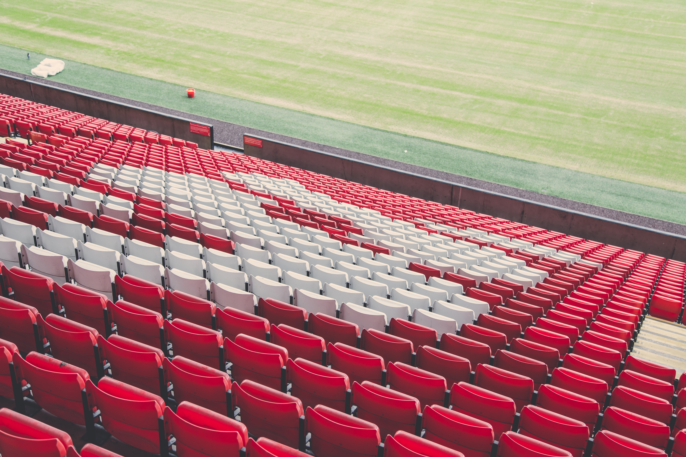

Jürgen Klopp and Joe Gomez previewed the Champions League fixture against Paris Saint-Germain at a press conference on Tuesday evening. The Reds face the Ligue 1 side on Wednesday night in the penultimate match of Group. 
which currently has four teams separated by only two points. See everything Klopp and Gomez had to say about the tie via our official YouTube channel below.